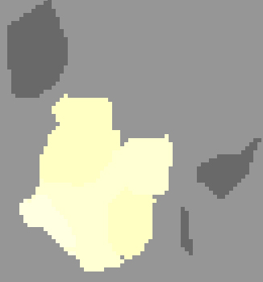
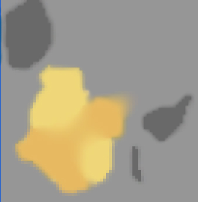
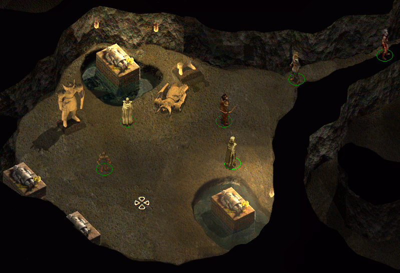
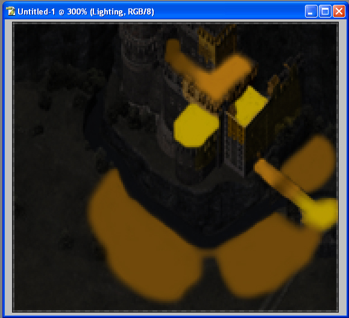

| Version History |
| Light Mapping |
| Using the Area Bitmap |
Version History
1.0 Initial release 1.1 'Using the Area Bitmap' added 1.2 'Using the Area Bitmap' updated. Light Mapping
Using the Area Bitmap
This tutorial will illustrate how to create advanced light maps. It's short and sharp because I do not know what is your favourite paint package and so I cannot give you steps on how to do it - I can only tell you what to do. Before you begin, back up your original DLTCEP-created lightmap; DLTCEP will not be able to recognise the advanced light map. It will do its best but you will end up with an unusable mosaic in the program.
Although DLTCEP gives you the ability to make light maps, it's very limited in that it only gives you 256 colours, of which around 128 are actually useable. The step between adjacent colours is very noticable and I'm sure that by now you will have realised that your light maps look nothing like those produced by Bioware. To create those, you need to resort to drawing your own light maps; or to be more accurate, you need to resort to upgrading the light map you produced in DLTCEP. Once you have the xxxxxxLM.BMP open in your paint program, zoom in and you'll find that the pixelation produced by DLTCEP is very obvious (image 1). Both image 1 and image 2 were captured at 500% zoom factor.
|
 Image 1 - Pixelation |
You will need to convert the 256-colour DLTCEP-produced light map to RGB (24 bit). Once you have down this, you can get to work. To upgrade the torch lighting in a small cavern, I flood-filled the DLTCEP areas with what I considered to be a better reflection of torchlight. Having done that, I then made extensive use of the Blur tool, in both Normal and Darken mode. I used the Darken mode to blend the torchlighlight into the 'unlit' cave passages and the 'Normal' mode to blend the overlapping light areas. While I was at it, I also blended in the deep shadows to the lighter shadow areas.
|
 Image 2 - The modified light map |
Save the map as RGB; the Infinity Engine will be quite happy with it. The effect in-game compared to the original DLTCEP light map is quite subtle but - if you'll pardon the expression - it's infinately better. Image 3 is my modified map in-game; depending on your monitor you may or may not be able to see the difference in shading on each character, but you should be able to line up the new light map with the shadows on the floor.
|
 Image 3 - In-game test |
| Light Mapping |
If you are creating a large area then you can also use the area bitmap as a light-mapping guide. In DLTCEP simply select a single light colour for the entire lightmap and then quit. Go for your favourite image editing program (you really cannot use Microsoft Paint for this) and open up both the area bitmap and the light map. Make a copy of the area bitmap and close the original. Note the image size of the light map (X and Y pixels) and shrink the area map copy to the same size. Add a new layer and paint your light map on that; when you've finished, save the light map as RGB. This method is most useful in an area where there is very little change of lighting and accuracy is not an absolute requirement.
|
 Image 4 - Night light-mapping Cerendor Hold (300% zoom factor). |
You can also do this 'the other way around' by working on a full-size copy of the area bitmap. This method takes the longest but gives the most accurate results. I use a new layer for each change of lighting colour and then when I'm happy with the results, save the file as a bitmap which automatically flattens the entire image. By keeping a copy of the fullsize light map with all of the layers intact, it makes it easy to go back and tweak just one colour if that area is not quite right when tested in the game. Finally, reducing the image size to the size of the original light map introduces shading between colours as a by-product of the resizing.
It's one of those small upgrades that makes an area so much better. Try it and see.
|
Tutorial written by Yovaneth, apprentic'd at Candlekeep during the Bhaalspawn Troubles. Post it where you will but please don’t take credit for what you have not written. |